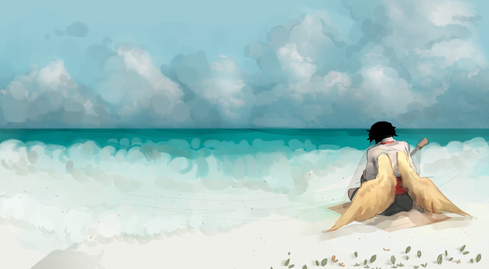
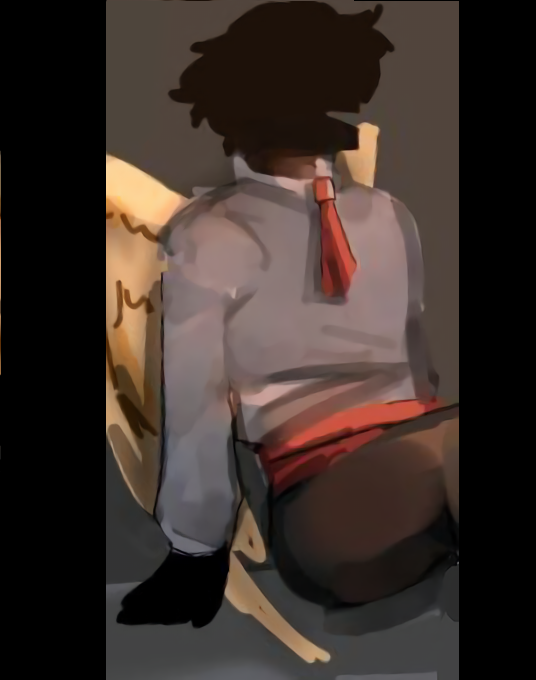
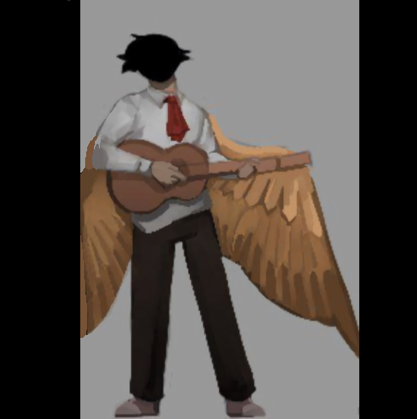
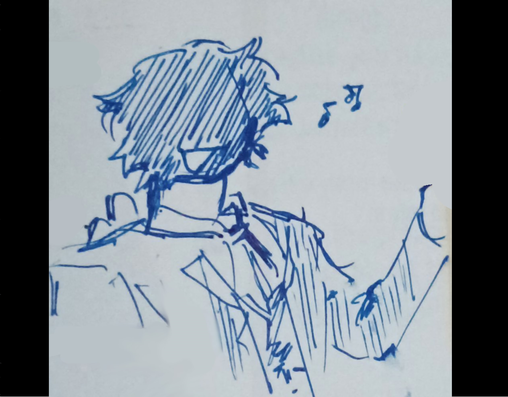

:/ДЕЛО 7
:/ДЕЛО 7
|
:/ДЕЛО 7
|

|
история:
в родном мире, откуда изначально выкинуло [rx_iris], появился пробел,
т.к. его перенесло на ФК. была отличная возможность заполнить пустую строчку кода мира втиснуть туда копию,
точь в точь повторяющую оригинал в молодости, тогда, когда он там жил. он живет в неведении, можно сказать,
он единственный из копий живёт самой спокойной жизнью. [rx_iris] посещает его только чтобы посмотреть на... "себя",
счастливого когда-то. это заставляет иногда его задумываться о чём-то беззаботном, приземлённом и лёгком.
факты: - он является молодой версией [rx_iris]. в общем, до ФК. он НИЧЕМ не отличается от оригинала в те годы. также, как и он, живёт в Испании, музыкант, играет на гитаре и т.д... но в отличие от 1, у него всё ещё золотые крылья, а не чёрные. - его жизнь охраняет [rx_iris]. он не знает о других копиях. - [rx_iris] дарит ему подарки на праздники, а он не знает, откуда они берутся. никто не знает. |



